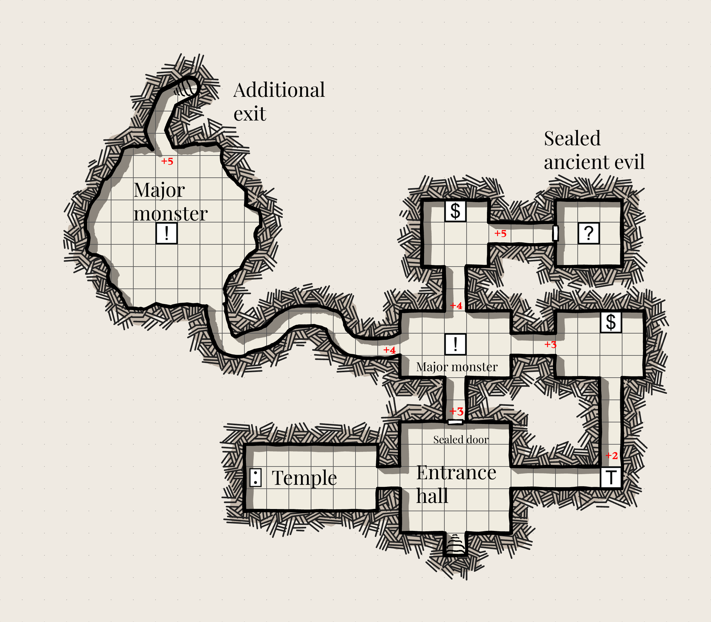
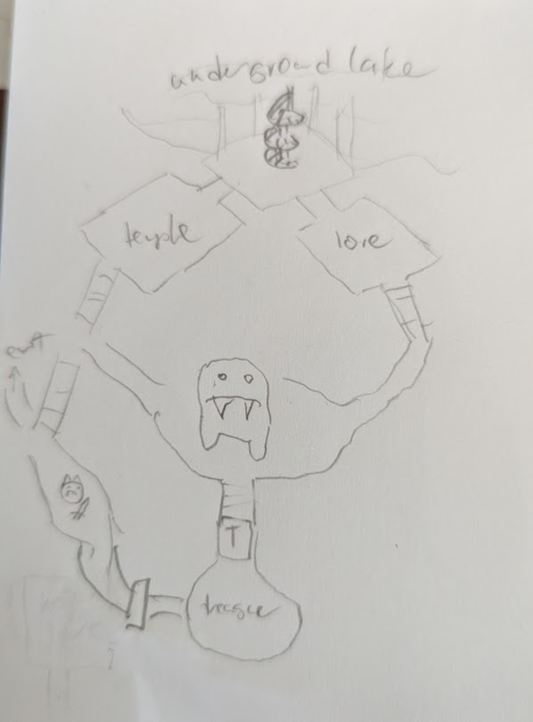

The Most Important Two Pages of Procedures to Discover the Path Ahead
I've decided to publish a blog version of the main idea in Procedures to Discover the Path Ahead because I keep wanting to tell people that I wrote something that solves their problem, but I don't want to seem spammy and ask them to buy something.
So here is the core mechanic. You have a counter that goes from 0 to 6 and you add the results of a d6 to the counter. You then look up the result in a table. This is basically a depth crawl.
- Water
- Farmland/village
- Waystation (e.g. an inn, monastery, friendly military post, roadside stalls). Add 1 to the counter.
- Gentle wilds (rolling hills, meadows, forests that are well explored and used by loggers, hunters, etc). Add 1 to the counter.
- Farmland/village, again. Add 1 to the counter.
- Rough wilds (bogs, scary forests, rocky hills, small mountains). Add 2 to the counter.
- Barrier (Deserts, oceans, mountains). Place up to 2 spaces away and add 2 to the counter when you reach that spot. Have it extend a few spaces in either direction.
- Unfriendly (monsters, bandits, army of a rival kingdom). Add 1 to the counter.
- Rough wilds again. Add 1 to the counter.
- Town, placed 2 spaces away. Reset the counter to 0.
- Deep wilds: enter the land of the fey, etc.
- City. Place 3 spaces away and set the counter to 0.
Example of a journey
A space can be a hex, a day's travel, an hour's travel, etc. If you're doing this without a map, I usually roll 2 options and have the option of going one of two ways at each point. For example:
(Counter 0, roll a 5 and 1) (farmland, water) You set off on your journey with the ocean on one side and a seaside village on the other, the road leading through little gardens and orchards. You head through the village. +1
(counter 1, you roll a 1 and a 2) (farmland, waystation) The path continues into a valley with more villages, but you decide to take a road that will lead you farther afield. You stop for the night in an inn. +1
(counter 2, you roll a 5 and a 3) (barrier, farmland) The road continues up towards a steep and foreboding mountain range. One fork takes you by some pastoral villages at the foot of the mountains, but you are going on a Journey. You set off to climb through a narrow and treacherous mountain pass. +2
(counter 4, 1, 4) (farmland, unfriendly) You make it through, exhausted, and see an imposing fort ahead, flying a flag with a skull on it. You instead take refuge in a mountainside village. The food is plain but hearty and you manage to regain your strength. +1
(counter 5, 6, 10) (deep wilds, town) Before you leave, the villagers point out to you two immense stones in the side of one of the mountains. They tell you that those who pass through often do not return, that it is the gate to some other world. You decide ths sounds like a bad idea. You can see what looks like a town further down in the valley, and decide to head there instead.
(counter reset to 0, 6, 3) (rough wilds, waystation) The trail does head through a particularly ominous forest, but the villagers tell you that if you stay on the main path and head for the monastery you should be fine. The forest, they tell you, is full of wolves, but they keep off the main path. You follow their advice and reach a monastery, where you spend the night and learn more about the area. It is ruled, they say, by a cruel tyrant (in the castle), but whose grasp on power is fragile. The town is technically under their control, but largely independent.
(counter 1 but you've reached the town) You reach the town! We'll end our journey here but we could also set off in a new direction, or return to one of the interesting and dangerous locations you passed up before.
I have tables in the book to flesh out each location a bit more, but you could equally well use similar tables in other books. You could use this in conjunction with other game rules: add random encounters, for instance.
The goal is to randomly create a map or a journey which also follows a satisfying narrative pattern. Stateless random location generators end up feeling a bit incoherent sometimes, since anything can appear next to anything else. By adding some state, the journey naturally follows a narrative, where it increases in difficulty as you get farther from home, requiring you to reach several obstacles, before reaching your goal. It also feels more naturalistic, with areas near major settlements having smaller settlements and relatively safe areas, and more remote areas being more dangerous. It also means that potential adventure sites (the portal to a strange world, the mountains, the ominous castle), require some effort to discover.
Example of a hex map
You can also do this with a hex map. In this case, write the counter number on each hex. When you go to a new hex, take the average of the hexes next to it that you've visted. You can also pre-seed the map with ocean hexes (e.g. have it be around a bay, or a peninsual like Scandinavia) and it works out pretty well.
I mean to eventually have a page walking through an example of making a hex map, but it would make this blog post really long so it's coming later. Here are two maps that I made using this, though:


Using this structure for other things
I have some other types of overland journey in the book. One thing I've been meaning to explore, but haven't until now, is using it to generate dungeons. Here's a first attempt:
- A temple or other external-facing structure
- A sealed door +3
- An incursion from the natural world
- A minor enemy, guarding a useful item +1
- A secret revealed or a useful item +1
- An obvious trap or puzzle +2
- A passage heading downwards. +3
- Another entrance. If the dungeon continues, reset counter to 0
- A powerful enemy +1
- A sealed door +2
- An ancient evil unleashed +1
- A great treasure
On a 6, the dungeon loops back on itself.
I tried it out and it makes some decent small dungeons. It currently has no guidance on exits for rooms, I'm just doing what feels right in the moment, but if I made this into something publishable I would probably want to come up with a procedure for that, as well as more guidance for how to actually stock the rooms. I also might want to tweak it to make bigger dungeons. But as a first, off the cuff implementation without any effort spent refining it, I'm pretty happy with it. There are multiple paths and a sense of progress as you go deeper.
(Made with Dungeon Scrawl)
Here's a slightly weirder one that I did, that I'm not going to try doing on an actual map. I like that it ended up being very vertical. Also this is the point where I decided we needed another sealed door farther down. It's still super short though - you basically have one choice to make - do you try and fight Big Scary Monster, maybe with the help of Lore, or do you fight the slightly less scary monster and then deal with the door? Or maybe3 the Big Scary Monster leaves to go to the lake sometimes.
If I was playing solo, I'd probably make the room with "lore" be basically a token for something I can then retroactively say applied to the situation.
General design considerations when writing your own
- The more frequent you increment the counter, the faster it goes.
- Anything 1-6 can happen on the first roll.
- Consider things within 6 of each other. Does it make sense for them to occur back to back?.
- Things in the 3-9 range or so will show up more often.
I don't have a license for this "system" because I think 90% of it isn't copyrightable anyway, aside from the exact wording that I use, and I think there is a tendency for people to over-claim what is copyrightable in the RPG world. I'm happy for you to make use of this or to make your own versions of these tables, and I'd love to hear about it if you do.